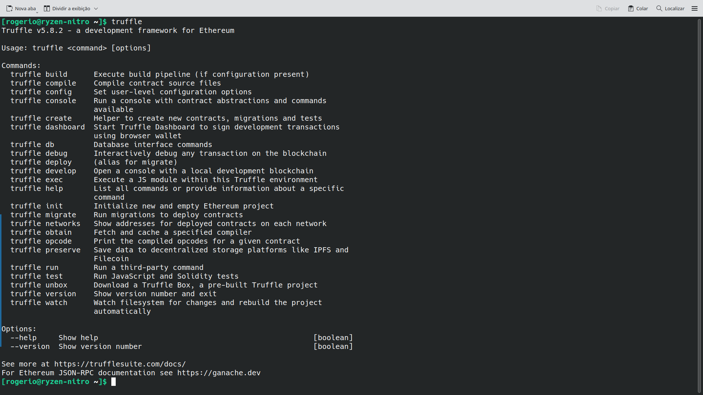
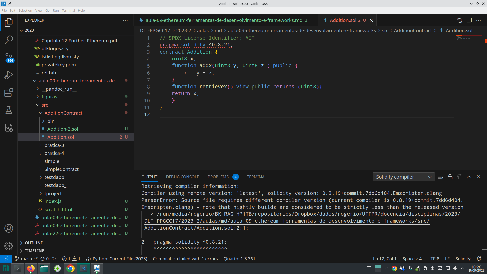

2 Aula 02 - Ethereum
Visão Geral
APIs, protocolos e Linguagens de Programação Suportados.
3 Introdução
3.1 Objetivos
- Apresentação de uma Visão Geral sobre rede Ethereum, componentes do Ecossistema Ethereum, a Ethereum Virtual Machine (EVM) e Contratos Nativos. Além disso, uma perspectiva do usuário é apresentada, mostrando a estrutura dos blocos do blockchain da Ethereum, Wallets e softwares clientes, nós e mineradores, ferramentas e
APIs, protocolos e Linguagens de Programação Suportados.
4 Visão Geral do Ethereum
5 Ethereum
5.1 Ethereum – Overview
Vitalik Buterin conceitualizou
Ethereumem Novembro de 2013.A ideia central proposta foi o desenvolvimento de uma linguagem Turing-completa para permitir o desenvolvimento de programas arbitrários (contratos inteligentes) para blockchain e Aplicações Descentralizados (DApps).
Este conceito difere do Bitcoin, onde a linguagem de script é limitada e permite apenas as operações necessárias.
[framebreak]
O Ethereum Yellow Paper foi escrito por Dr. Gavin Wood, o fundador do Ethereum e da Parity (http://gavwood.com), e serve como uma especificação formal do protocolo da Ethereum.
As implementações de clientes
Ethereumseguem as especificações de protocolo definidas no artigo.
5.2 Ethereum Releases
- A primeira versão da Ethereum, denominada Olympic, foi liberada em Maio de 2015.
- Dois meses mais tarde, a versão chamada de Frontier foi liberada em Julho.
- Outra versão, a Homestead com várias melhorias foi liberada em Março de 2016.
- A release chamada de Muir Glacier, que atrasou a difficulty bomb (https://eips.ethereum.org/EIPS/eip-2384).
- Um grande lançamento antes disso foi Istambul, que incluiu mudanças em torno de privacidade e dimensionamento capacidades.
- Uma lista completa com todas as releases anunciadas é mantida em https://github.com/ethereum/go-ethereum/releases.
6 A Blockchain Ethereum
6.1 A Blockchain Ethereum
- O Ethereum, assim como qualquer outro blockchain, pode ser visualizado como uma máquina de estado baseada em transações.
A ideia principal da blockchain da Ethereum: um estado gênese é transformado em um estado final executando transações de forma incremental.
A transformação final é então aceita como a versão absoluta e indiscutível do estado.
A função de transição de estado Ethereum é mostrada, onde a execução de uma transação resultou em uma transição de estado.
6.2 Ethereum – Perspectiva do usuário
O caso de uso mais comum do rede Ethereum é o envio e o recebimento de pagamentos.
Para isso, o usuário assina a transação e a envia, que se propaga na rede, momento em que os mineradores a pegam, verificam e iniciam a Prova de Trabalho (PoW).
Com a atualização
Merge, aPoWfoi substituída por Proof of StakePoS.Se a verificação for bem sucedida, o bloco com a transação é finalizado e propagado, e um novo bloco é adicionado à cadeia.
Para enviar e receber transações, um software de carteira pode ser usado, por exemplo, carteiras são usadas em dispositivos móveis. como aplicativos.
6.3 Arquitetura de Alto Nível da Ethereum
7 Rede Ethereum
7.1 Rede Ethereum: mainnet
A rede Ethereum é uma rede peer-to-peer onde os nós participantes mantem a blockchain e contribuem para o mecanismo de consenso. As redes podem ser divididas em três tipos, com base nos requisitos e uso.
[block]{A mainnet}
A mainnet é a atual rede Ethereum. Seu ID de rede é \(1\) e seu ID de cadeia (chain) é também \(1\). Os IDs de rede e de cadeia são usados para identificar a rede. Um explorador de blocos que mostra informações detalhadas sobre blocos e outras métricas relevantes está disponível em https://etherscan.io, que pode ser usado para explorar a blockchain Ethereum.
[/block]
7.2 Redes de Testes
[alertblock]{Testnets}
Existem um número de redes de testes (testnets) disponíveis para Ethereum. Elas tem como objetivo fornecer um ambiente de testes para contratos inteligentes e DApps antes de serem implantados para produção na rede blockchain. Além disso, sendo redes de teste, elas permitem experimentos e pesquisa. Umas das principais redes de testes que existiu foi Ropsten, que contém todas as características de outras redes de propósito especial menores que foram criados para fins específicos. Por exemplo, outras redes de teste incluem Kovan e Rinkeby, que foram desenvolvidos para testar as versões do Byzantium. As mudanças que foram implementados nessas redes de teste menores também foram implementados em Ropsten, fazendo com que a rede Ropsten tivesse todas as propriedades de Kovan e Rinkeby.
[/alertblock]
[framebreak]
[alertblock]{Testnets}
Em 16/06/2025, as três testsnets públicas para desenvolvimento que eram mantidas Sepolia, Hoodi e a Holesky, (que será depreciada em setembro de 2025).
A rede Sepolia é uma rede para desenvolvedores testarem seus contratos e aplicações. A rede Goerli permitia que os desenvolvedores de protocolo testassem atualizações de rede e permitia que os interessados testassem validadores em execução. A Goerli foi depreciada em \(2023\), dando lugar a Holešky.
A Sepolia é recomendada como padrão para desenvolvimento de aplicações.
Atualmente, (14/08/2025) as redes de teste podem ser vistas em: https://ethereum.org/pt/developers/docs/networks/
[/alertblock]
7.3 Redes Privadas
[exampleblock]{Redes Privadas}
As private nets são redes privadas que podem ser criadas gerando-se um novo genesis block. Este é geralmente o caso em redes blockchain privadas, onde um grupo privado de entidades iniciam sua rede blockchain e a usam como uma blockchain autorizada ou de consórcio.
Uma lista de redes pode ser vista em https://chainlist.org/.
Mais informações sobre Redes Privadas.
[/exampleblock]
7.4 Elementos do Ecossistema Ethereum
- Chaves e Endereços
- Contas
- Transações e mensagens
- Criptomoeda/Tokens Ether
- A Ethereum Virtual Machine (EVM)
- Smart contracts e contratos nativos.
8 Contas
8.1 Tipos de contas
- EOAs: Externally Owned Accounts. Contas de usuários representadas por um endereço.
- CAs: Contract accounts. Criadas como resultado do deployment de um contrato inteligente, também representado por um endereço.
8.2 Externally Owned Accounts (EOA)
Uma Externally Owned Account (EOA) é uma conta controla por um par de chaves privadas, que pode ser mantida por uma pessoa ou por um servidor externo. Essas contas não podem conter código
EVM. As características de um EOA incluem o seguinte:Contém um saldo (balance) de Ether
Capaz de enviar transações
Controlada pelas chaves privadas da conta
Não tem nenhum código associado a ela.
Um banco de dados de chave/valor contido em cada conta, onde chaves e os valores são strings de 32 bytes.
8.3 Contract Accounts (CA)
Contract accounts não são controladas por humanos. Elas armazenam instruções de contratos inteligentes e são ativadas por contas externas ou por outros contratos.
Contract accounts tem as seguintes características:
Tem um saldo de Ether
Mantem algum código de contrato na memória.
Pode ser acionado por humanos (enviando uma transação) ou outro contratos enviando uma mensagem.
Quando executado, pode executar operações complexas.
Têm seu próprio estado persistente e podem chamar outros contratos.
Não ter dono após ser liberado para o
EVM.Um banco de dados de chave/valor contido em cada conta, onde chaves e os valores são strings de 32 bytes.
9 Transações
9.1 Transações e Árvore de Transações (trie)
[alertblock]{Transações}
Uma transação no Ethereum consiste em vários campos, como mostrado aqui, junto com a transaction trie. O diagrama também mostra a relação entre a tentativa de transação e o cabeçalho do bloco.
[/alertblock]
9.2 Tipos de Transações
[columns]
[column=0.5]
- Existem três tipo de transações:
- Criação de Contrato
[Contract Creation] - Invocação de Contrato
[Contract Call] - Transferência de Valor.
- Criação de Contrato
[column=0.5]
[/columns]
O diagrama mostra a criação do contrato e as transações de chamada, com campos obrigatórios.
9.3 Estado da conta e armazenamento na trie
O diagrama mostra os campos contidos no estado da conta e como os vários elementos estão contidos no world state trie: * World state trie
State root
Account state
Account storage trie
10 Recibos de Transações
10.1 Recibos de Transações
[columns]
[column=0.5]
- Recibos de Transações (transaction receipts) são gerados como resultado da execução de transações.
- Logs também são atualizados em conformidade.
- Ambas as estruturas de dados contêm vários campos.
[column=0.5]
[/columns]
10.2 Blocks e Blockchain
[columns]
[column=0.5]
Um bloco Ethereum consiste em vários campos, conforme diagrama. State root, transaction root e receipts root são root hashes de suas respectivas árvores.
[column=0.5]
[/columns]
11 Ethereum Virtual Machine
11.1 A Ethereum Virtual Machine (EVM)
Stack size based on LIFO queue: Last In, First Out.
Limite de profundidade de pilha \(1024\)
Turing complete mas limitada por gas, fazendo ela ser quasi-Turing complete.
Projeto Big-endian.
Armazenamento disponível na EVM:
- Memory
- Storage
- Stack
11.2 EVM operation design
11.3 Ambiente de Execução
[columns]
[column=0.5]
O ambiente de execução do Ethereum consiste em vários elementos, como mostrado:
[column=0.5]
[/columns]
11.4 Machine State
[columns]
[column=0.5]
Uma Máquina de Estado ou Machine state é uma tupla compreendendo vários campos, como mostrado em:
[column=0.5]
[/columns]
12 Nós
12.1 Nós e Mineradores
A mineração é o processo pelo qual novos blocos são selecionados por meio de um mecanismo de consenso e adicionados ao blockchain.
O processo segue os seguintes passos:
Ficam ouvindo as transações transmitidas na rede Ethereum e determina as transações a serem processadas.
Determinam quais blocos são válidos e os obsoletos.
Atualiza a conta (account balance) com a recompensa ganha pela mineração bem sucedida de um bloco.
Finalmente, um novo estado válido é computado e o bloco é finalizado.
Ethashé o nome do algoritmo deProof of Work(PoW) que era usado naEthereum.Casperé o algoritmo de consensoProof of Stake(PoS) daEthereum.
13 Clientes
13.1 Wallets e Software Clientes
- Wallets (Carteiras)
- Light clients (softwares clientes)
13.2 Tipos de sincronização de clientes
Full: Os nós completos mantêm apenas uma cópia local dos dados relativamente recentes (normalmente os 128 blocos mais recentes), permitindo que os dados mais antigos sejam excluídos para economizar espaço em disco. Dados mais antigos podem ser regenerados quando necessário.
Archive: Nesse modo de sincronização, o cliente
Gethfaz um download completo da blockchain para o nó local. Isso significa que ele obtém todos os cabeçalhos e corpos dos blocos e valida todas as transações e blocos desde o bloco genesis.Fast: Neste modo é feito o download completo, mas somente recupera e verifica somente os \(64\) blocos anteriores ao bloco corrente. Depois disso, ele verifica os novos blocos na íntegra. Não reproduz e verifica todas as transações históricas desde o bloco genesis, em vez disso, ele só faz os downloads de estado. Isso também reduz significativamente o tamanho do disco do banco de dados blockchain. Este é o modo padrão de sincronização do cliente
Geth.Light: Este é o modo mais rápido e apenas baixa e armazena o estado atual. Nesse modo, o cliente não baixa nenhum bloco histórico e processa apenas os blocos mais novos.
Mais informações: Nodes and clients
13.3 Requisitos: Full Node vs Archive Node
Full Node: últimos 128 mais recentes blocos.
Archive Node: Todos os blocos desde o Genesis block. O armazenamento varia conforme o cliente (em março de 2023, o archive mode no Geth usava ~13.5 TB, e Erigon utilizava ~2 TB (3 TB era o recomendado)).
14 Consumo de Armazenamento e Energia
14.1 Tamanho dos dados do Blockchain da Ethereum
No início de 2020, o tamanho do blockchain Ethereum era de aproximadamente \(210GB\), baixar e manter isso pode ser um problema.
Em 18 de outubro de 2022 o tamanho chegava a \(966.06GB\), segundo
ycharts.
[framebreak]
- Em 16 de abril de 2023 o tamanho estava em \(914.81 GB\).
ycharts[framebreak]
- Em 10 de Agosto de 2023 o tamanho estava em \(1138.91 GB\).
ycharts[framebreak]
- Em 21 de novembro de 2023 o tamanho estava em \(1351.56 GB\).
ycharts[framebreak]
- Em 13 de agosto de 2024 o tamanho estava em \(1137.17 GB\).
ycharts[framebreak]
- Em 16 de dezembro de 2024 o tamanho estava em \(1203.89 GB\).
ycharts[framebreak]
- Em 16 de junho de 2025 o tamanho estava em \(1328.17 GB\).
ycharts[framebreak]
- Em 14 de agosto de 2025 o tamanho está em \(1373.84 GB\).
ycharts[framebreak]
- Panorama de \(5\) anos:
ycharts14.2 Consumo de Energia
- Com a última atualização
Mergeque trocaram a Proof of Work (PoW) pela Proof of Stake (PoS) tendo como uma das motivações a questão ambiental. Houve um grande impacto no consumo de energia.
- Em 13/08/2024:
- Em 16/12/2024:
- Em 16/06/2025:
- Em 14/08/2025:
15 Contratos Inteligentes
15.1 Contratos Ricardianos
- Contratos Ricardianos foram introduzidos no Financial Cryptography in 7 Layers, por Ian Grigg, no final dos anos 1990s (10.1007/3-540-45472-1_23?).
[columns]
[column=0.5]
Os contratos ricardianos podem registrar um documento como um contrato legal, e vinculá-lo com segurança a outros Sistemas.
- Usam hashes criptográficos para identificação
- Incluem conteúdo jurídico legível por humanos e código de máquina.
[column=0.5]
[/columns]
15.2 Contratos Inteligentes
Um Smart Contract é um programa de computador que é seguro e não interrompível representando um acordo que é executado automaticamente:
- Seguro
- Determinístico
- Semanticamente correto
- Não interrompível. Uma vez executado, o contrato inteligente não pode ser interrompido e uma vez implantado geralmente não pode ser alterado.
Nick Szabo cunhou o termo “contrato inteligente”. Em 1994, ele escreveu uma introdução ao conceito e, em 1996, uma análise sobre o que os contratos inteligentes poderiam fazer).
Uma introdução sobre Contratos Inteligentes link
16 Programando Contratos
16.1 Ecossistema de Componentes de Desenvolvimento Ethereum
16.2 Linguagem Solidity
É uma linguagem orientada a objetos de alto nível para implementar smart contracts. Tem se tornado a linguagem padrão para escrever contratos para Ethereum. O código precisa ser compilado e transformado em bytecode, é necessário utilizar o compilador
solc.Leia mais sobre
Soliditye Recursos de Desenvolvimento deDAppsem DAPP DEVELOPMENT FRAMEWORKS2
16.3 Compilador solc
16.4 Ferramentas e Bibliotecas
Ganache- Simula um blockchain Ethereum local com uma interface com usuário (UI). É comumente usado no desenvolvimento e testes.
Ganache-cli- Versão linha de comando do
Ganachetem como pre-requisitoNodeJS.
- Versão linha de comando do
- Na aula anterior instalamos o
Ganachee oMetamask.


16.5 Frameworks
- Truffle: Framework de desenvolvimento para Ethereum com recursos para implantação, depuração e testes de contratos inteligentes. Automatiza as tarefas de compilação e deploy.

[framebreak]
[columns]
[column=0.5]
[column=0.5]
[/columns]
16.6 Desenvolvimento e Implantação
- A escrita de contratos inteligentes é basicamente a escrita de código fonte do contrato em
Solidityem um editor de texto. - Existem vários plugins e extensões disponíveis para os editores mais comuns, tais como Vim, Atom, VSCode:JuanBlanco.solidity, que fornecem syntax highlighting e formatadores para código fonte
Solidity.

16.7 Formato de um arquivo fonte de Solidity3
16.8 Remix IDE
- A
Remix IDEpode ser utilizada para edição, compilação, teste e deploy.


17 Hyperledger
17.1 Hyperledger
A Blockchain Platform for the Enterprise
17.2 Leitura Recomendada
[alertblock]{Leitura Recomendada}
Capítulo 11: Ethereum 101
Capítulo 12: Futher Ethereum
[/alertblock]